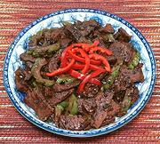

|
Beef with Bitter MelonChina, Guangzhou (Canton) | ||||
| Serves: Effort: Sched: DoAhead: |
3 w/rice ** 1-1/4 hr Prep |
Beef Bitter Melon stir fry - great for folks who like Bitter Melon, but not so good for so-called "super tasters" who can't stand bitter. | |||
|
11 14 ------- 1/2 2 1/2 1/2 2 ------- 4 2 ------- 1-1/2 1 1 1/2 3 1/4 ------- 1 1 |
oz oz --- T t T T T --- cl T --- T T t t T t --- T T |
Bitter Melon (1) Beef lean (2) --- Marinade Oyster Sauce (3) Soy Sauce Rice wine (4) Cornstarch Water ------------- Garlic Black Beans (5) -- Sauce Rice Wine (4) Soy Sauce Soy Sauce, dark Sesame Oil Stock Pepper -------------- Oil Oil (more) |
Prep - (45 min - 35 min work)
|
Prepare a deep bowl of Ice Water. Bring plenty of Water to a rolling boil. Stir in 1 T Salt. Dump the Bitter Melon and blanch for 1 minute. Strain out and dump into the Ice Water.